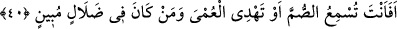
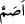
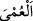
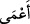

Şâyet çocuk çıkmazsa beni öldür” dedi. Kral bunları yaptı. Durumun aynen anlatıldığı
gibi olduğu ortaya çıktı. Kral o zâhid kişiyi manastırdan aldı. Bir deveye bindirip şehre
getirdi. Darağacını kurup zâhidi asmaya azmetti.
Tam bu sırada şeytan yine geldi. Öldürülmek üzere olan zâhide: “Benim emrimle zina
ettin. Benim emrimle cana kıydın. Artık bana îman et ki, seni bu kralın işkencesinden
kurtarayım” dedi. Şekâvet ve şer o zâhidi her yönden kuşattı; şeytana boyun eğip inandı.
Bu sefer şeytan derhal adamdan uzak bir yerde durdu. Zâhid, şeytana “Hadi ne
bekliyorsun, kurtar beni!” deyince, şeytan “Ben, âlemlerin Rabbi olan Allah’tan
korkarım” dedi.
İşte nefis ve şeytan, insanın yakın arkadaşları olup onu helâk ve hüsrâna
sürükleyinceye kadar tahrîk ve ifsâda devam ederler.
Bildim ki hırsızım benim evimdendir,
Duvarın yüksek ya da alçak olması artık önemli değil.
40. (Rasûlüm!) Sağırlara sen mi işittireceksin; yahut körleri ve apaçık sapıklıkta
olanları doğru yola sen mi ileteceksin?
“(Rasûlüm!)” Gönül kulağını kaybeden “sağıra” hakkın sözünü “sen mi
işittireceksin; yahut” gönül gözünü kaybetmiş olan kalbi “körleri ve” hiç kimseye gizli
kalmayacak şekilde “apaçık sapıklıkta olanları” ve Allah’ın ilminde sapıklık üzere
ölecek olanları “doğru yola sen mi ileteceksin?” Onlar apaçık sapıklık içindedirler.
Dolayısıyla senin o sapıkları doğru yola iletmeye gücün yetmez. Bu sebeple de sıkıntıya
girip boşuna zorluk çekme.
“/sum” kelimesi “/esamm”, “/umy” da “/a’mâ” kelimesinin çoğuludur.
Allah Teâlâ burada şuna işâret etmektedir: Rasûlüm! Bizim basîretini kapatıp rüşd ve
olgunluğunu bulandırarak ifsâd ettiğimiz, gönül kulağına eşkıyalık ve mahrumiyet
kurşunu akıttığımız kimseleri, kâmil bir peygamber olmana rağmen bunlara sen hidâyet
edemez; bizim himâyemiz, gözetmemiz ve inâyetimiz olmadan sen onlara hakkı
duyuramazsın.
Peygamberimiz (s.a.), kavmini İslâm’a dâvette kendini çok yorardı. Onlarsa müşâhede
ettikleri peygamberlik alâmetlerine karşı şaşı ve kör, işittikleri Kur’an âyetlerine karşı
sağır davranıyorlardı. Böyle durumlar üzerine bu âyet nâzil oldu.
Bu kavl-i ilâhî, müşriklerin sapıklığa iyice dalmaları ve küfürde bağışıklık kazanmış
olmalarından sonra Peygamber (a.s.)’ın, onların hidâyetine muktedir olabileceği
yönündeki arzu ve düşüncesini hayret ve tepkiyle karşılamaktadır. Şöyle ki; bunların
hakka karşı şaşılıkları sağırlıkla beraber tam bir körlüğe dönüşmüştür. Peygamberimiz